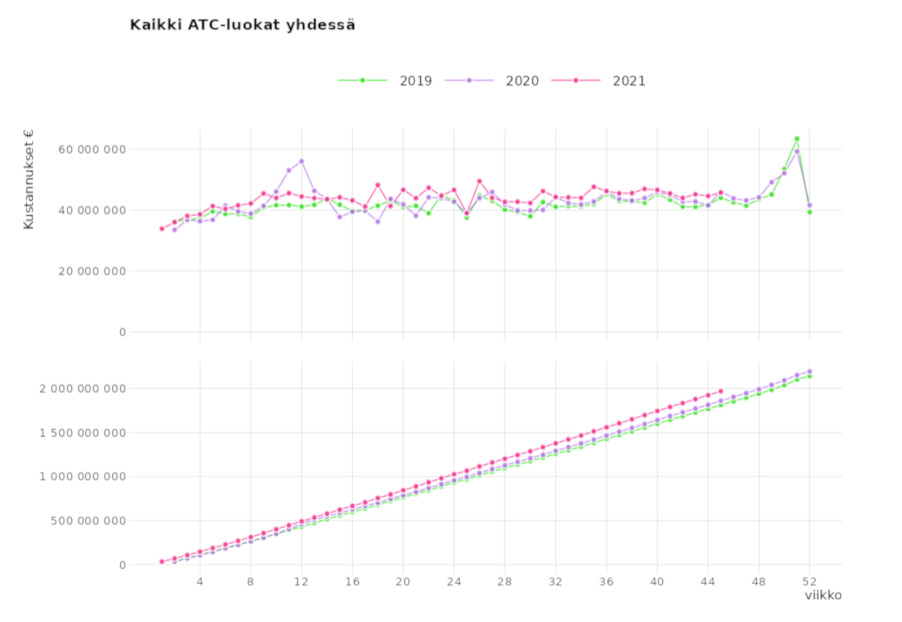
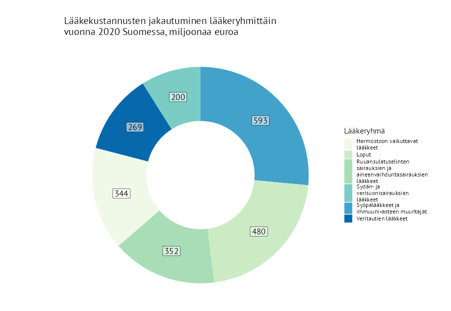

Verkkosovellukset

Reseptilääkkeiden ostot ATC-luokittain
Voit verrata sairausvakuutuksesta korvattavien reseptilääkkeiden kustannuksia, ostomääriä ja ostajien määriä viikkotasolla vuosien 2019-2021 välillä ATC-luokituksen tasoilla 1-5..

Avo- ja laitoshoidon lääkekustannusten kasvu ja lasku lääkeaineittain
Sovelluksen avulla voit verrata avo- ja laitoshoidossa käytettävistä lääkkeistä niitä, joiden lääkekustannukset ovat kasvaneet tai laskeneet eniten koko maassa ja sairaanhoitopiireittäin.
Raportit ja julkaisut
- 2022-06-06 - Tutkimusblogi
- Missä työikäisten lääkkeet määrätään? Tarkastelussa lääkemääräykset, -kustannukset ja -korvaukset terveydenhuollon eri sektoreilla
- Kari Heini, Nurminen Mikko, Rättö Hanna, lääkekorvaukset,
- 2022-06-02 - Tutkimusblogi
- Insuliinihoitojen aloitus väheni koronavuonna 2020
- Kurko Terhi, Rättö Hanna, korona, lääkkeet, sairausvakuutus,
- 2022-05-13 - Tutkimusblogi
- Kehittyvä lääkemaisema: toteutuuko lenalidomidi-syöpälääkkeen kymmenien miljoonien eurojen säästöpotentiaali?
- Koskinen Hanna, Kurko Terhi, Sarnola Kati, lääkekorvaukset,
- 2022-05-13 - Katsausartikkeli
- Monimuotoinen traumaperäinen stressihäiriö - muuttuvat käsitteet ja vaikutus hoitoon
- Laukkala Tanja, Tuisku Katinka, Garoff Ferdinand, Haravuori Henna, Jylhä Pekka, , , , ,
- 2022-05-13 - Artikkeli
- Kela kehottaa : Suosi biosimilaareja, kun määräät biologisia lääkkeitä
- Klintrup Katariina, Kastarinen Helena, Helminen Sari, Leinonen Janne, Saastamoinen Leena, , , , ,
- 2022-05-13 - Alkuperäistutkimus
- Pharmacists’ perceptions about knowledge of biologic medicines and their interchangeability and pharmacist-led substitution - a pilot survey of Finnish community pharmacists
- Kaunisto Senni, Siitonen Piia, Kauppinen Hanna, Sarnola Kati, , , , , ,
Tilastotietoa lääkkeistä
Tilastotietokanta Kelasto
Kelastoon on koottu keskeinen tilastotieto Kelan hoitamasta sosiaaliturvasta. Kelastossa voit tehdä raportteja haluamillasi valinnoilla Kelan tilastotiedoista.
Suomen lääketilasto
Suomen lääketilasto on Lääkealan turvallisuus- ja kehittämiskeskus Fimean ja Kelan yhteistyössä toimittama tilastojulkaisu, joka sisältää sekä lääkkeiden kulutustietoja että sairausvakuutuksen korvaustietoja.